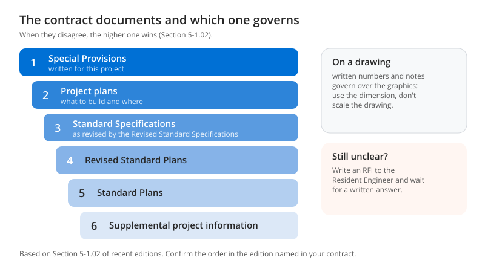

Special Provisions: what they change and why they win
In one sentence: the Special Provisions are the part of the contract written for this project. They change, delete and add to the Caltrans Standard Specifications: structure and how to read them, and when the two disagree, the Special Provisions govern.

Where they fit
Every Caltrans contract is built from the same rulebook, the Standard Specifications, plus documents written for the job. The Special Provisions are the most important of those project documents. They arrive in the bid package (in the Notice to Bidders and Special Provisions book), together with the project plans and the bid forms.
Together, the Special Provisions, the Revised Standard Specifications and the Standard Specifications make up the contract specifications. You never read one without the others.
What is inside
Special Provisions are organized with the same section numbers as the Standard Specifications, so Section 86 of the Special Provisions talks about the same subject as Section 86 of the book. Inside, you will typically find:
- Replacements: a paragraph of the Standard Specifications is replaced with new wording.
- Additions: new paragraphs or new subsections, for work the book doesn't cover or covers differently.
- Deletions: a requirement of the book that doesn't apply to this job.
- Project-specific information: working days, liquidated damages, the DBE goal, the edition of the Standard Specifications and Standard Plans that applies, and any Revised Standard Plans.
Most of the text is not written from scratch. Caltrans maintains Standard Special Provisions (SSPs), standard wording that designers pick and fill in. When no standard wording fits, the designer writes a non-standard special provision (nSSP). On electrical jobs, the nSSPs are where you usually find specific equipment: a particular cabinet, router, switch, camera or battery requirement.
How a PM uses them
- At bid time: read Sections 86 and 87 of the Special Provisions before pricing anything. Approved products, testing requirements and payment rules often change there.
- For submittals: every "submit" in the Special Provisions adds a line to your submittal log, on top of what the Standard Specifications already require. See Submittals: what Caltrans expects.
- For procurement: an nSSP that names a specific product or performance requirement is a long-lead warning. Ask suppliers early. See Procurement and long-lead items.
- In the field: when the crew's question is answered by the book, check that the Special Provisions don't say otherwise before giving the answer.
Why they win
The contract sets an Order of precedence: which contract document wins for when its parts disagree, and the Special Provisions sit at the top of it: they govern over the project plans, the Standard Specifications and the Standard Plans. That is why the rule "never read the Standard Specifications alone" matters so much.
If the conflict is real and the order of precedence doesn't settle it, don't guess: send an RFI to the Resident Engineer and wait for a written answer.
Section numbers and document names follow recent editions. Always confirm against the edition named in your contract.
Common mistakes / what Caltrans actually checks
- Pricing an item from the Standard Specifications when the Special Provisions changed its payment clause.
- Missing a submittal that only appears in the Special Provisions.
- Ordering "or equal" equipment when an nSSP calls for a specific product or requirement.
- Reading the Special Provisions of a previous, similar job instead of this contract's.